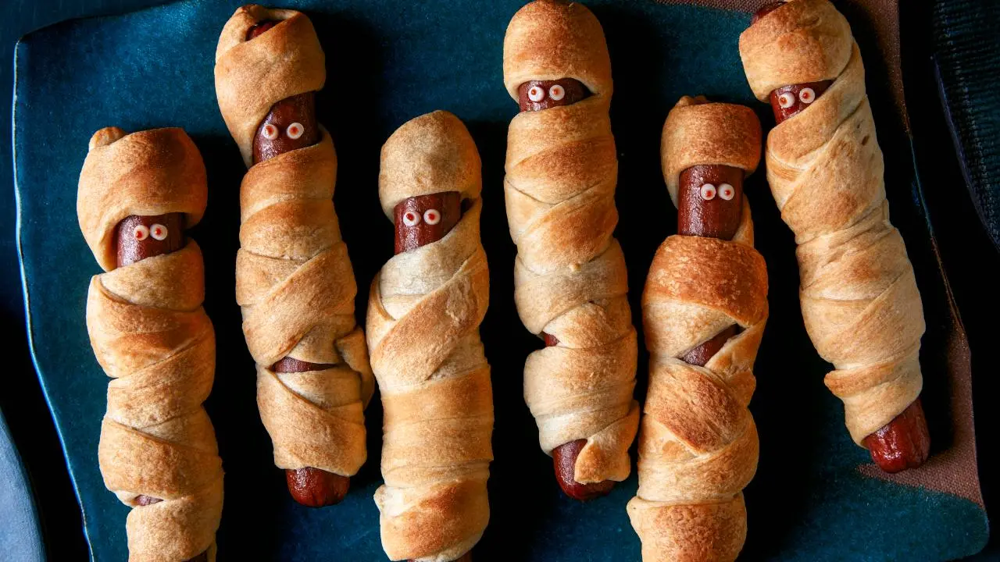
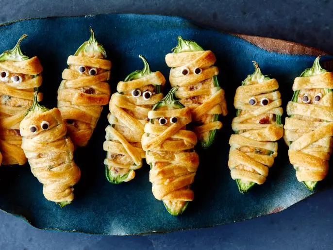
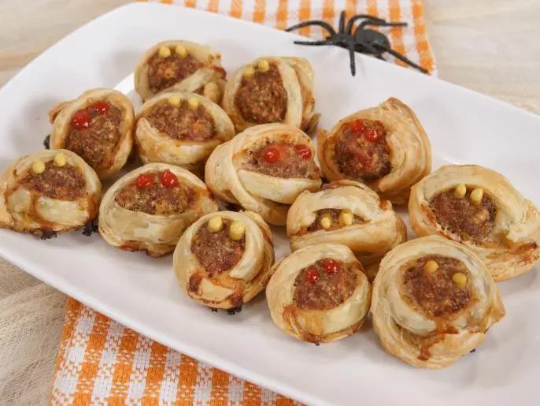
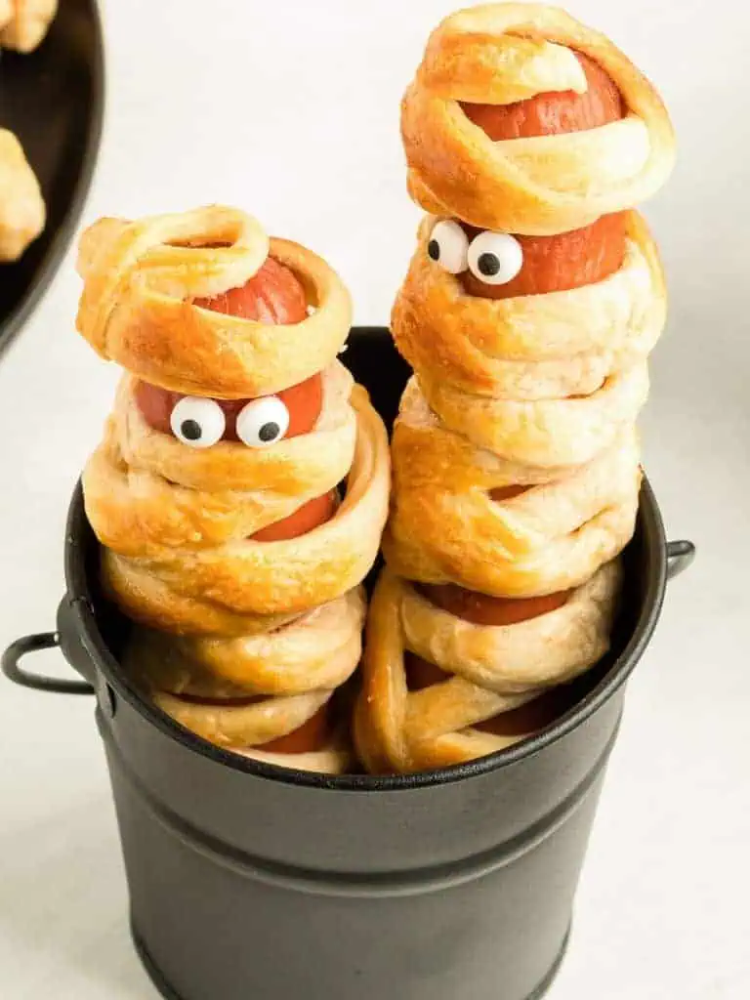
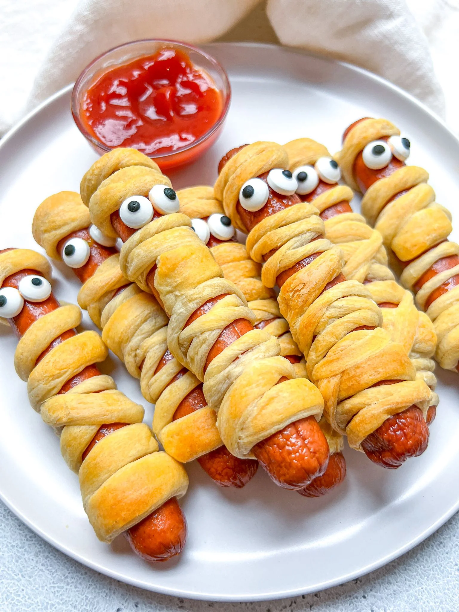
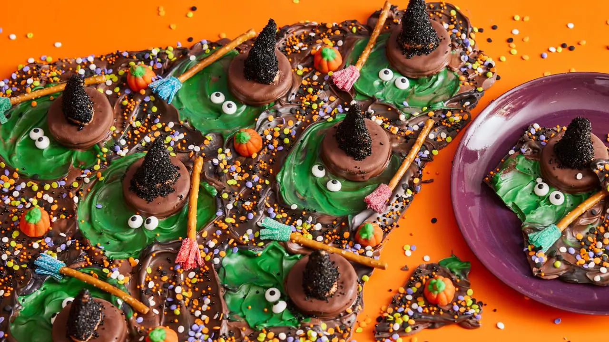

Halloween is an event celebrated on the 31st of October. It has become a celebration of horror and the supernatural. Many celebrate by creating halloween-themed treats! Below you can find the following halloween recipes, tap on the one that suits your spooky taste.
Hot Dog Mummies
Hot dog mummies is a fun way you can liven up your general, plain hotdogs. This recipe also works well with other ingredients apart from hotdogs. If you follow the dough part of the recipe, you can wrap this around any food of your choice!

Ingredients
~230 grams of Crescent Dough
8 Hot Dogs
Slice of American Cheese
Sauce of your choice (ketchup or mustard works well!)

Instructions
Preheat oven to ~375 defrees with baking paper and parchment paper/silicone mat
Unroll the crescent dough tube on a workable surface. Create a flat recetangle and cut the dough into 8 long strips.
Take a hot dog and strip of dough and wrap the dough around the hot dog while gently stretching the dough. Make sure to crisscross the dough often so it looks like a mummy! (around the place where you want the face of the hot dog, make sure it is exposed so eyes can be added after baking)
Place your wrapped hot dog on your earlier prepared baking paper and repeat step 3 for the rest of the dough and hot dogs. Bake for 15 minutes, until golden brown.
While the hot dogs bake, cut out 16 small circles of cheese for the mummies' eye
Remove your hot dogs from the oven when finished baing. Use a tooth pick to apply you sauce on the cheese to glue it to the exposed face area of your hot dog to create two eyes. Use the same tooth pick to gently put a little put of your sauce in the centre of the eye to create a pupil



Witch Chocolate Bark

Have you ever made chocolate bark where you melt and mix variety colour of chocolates together and harden it? Well thats what we are doing in this recipe but with a little twist of witches! A halloween, witch themed chocolate bark recipe.
Ingredients
~500 grams of chocolate (milk, dark)
Batch of sour candy strips
8 pretzel sticks
teaspoon of coconut oil
8 chocolate sandwich cookies
8 cone shaped snacks
Sprinkles/sugar/mini candy pumpkins for toppings
~500 grams of meltable coloured candy (variety of colours!)
16 candy eyeballs
Instructions
Preheat oven to ~250 defrees with baking paper and parchment paper/silicone mat
Use kitchen shear to cut each strip of candy to look like a fringe for the broom. Connect it to the tip of the prtzel stick and repeat it 8 times.
Melt the coloured candy until liquidly. Give it a good stir and melt it again if not smooth. Repeat until smooth, then stir in coconut oil. Set it aside and to cool for 5 - 10 minutes
Arrange the chocolate covered cookies on a plate. Cover the cone-shaped bottom with the melted candy and stick the pointed-side up onto a cookie. Repeat until 8 witch hats are made in total.
Melt your chocolate until smooth and set aside to cool for a bit
Divide the left over melted candy into around 8 even circles on your earlier baking paper.
Pour your melted chocolate around the coloured circles to make the chocolate bark
While it is till melted, place the eyes on the circles and put a witch hat a few cm above your eye. Give each witch circle a broom next to it.
Place any extra toppings you would like and decorate it to your choice!
Place in fridge overnight to harden and its ready to eat!!